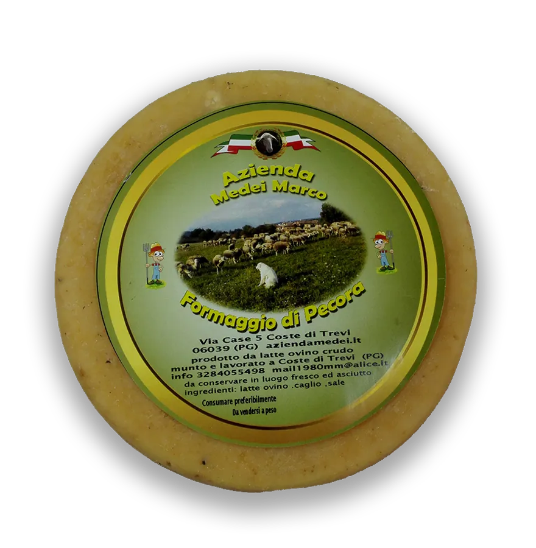
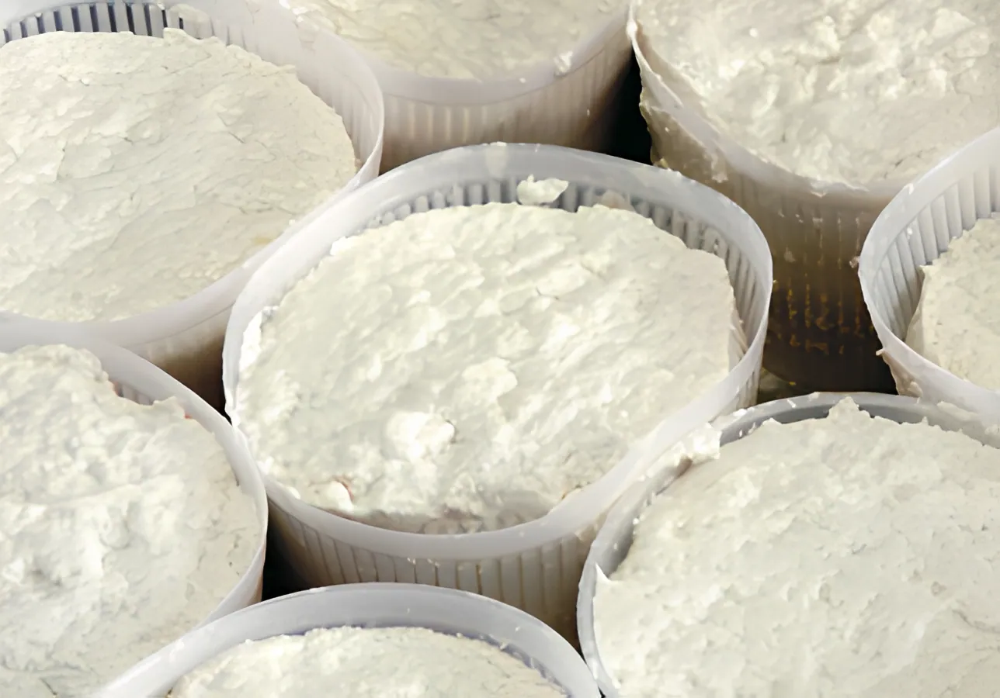
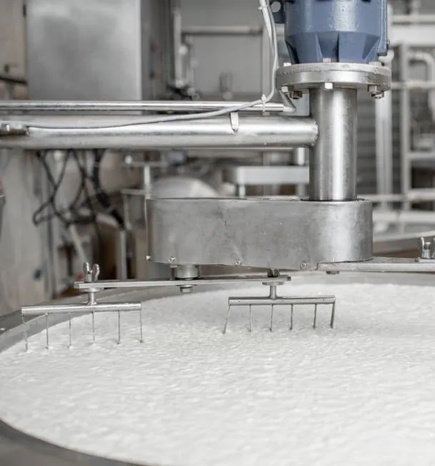

Fresh sheep's milk cheese
Fresh Umbrian cheese from Lacaune sheep, handmade with raw milk for an authentic, traditional taste. Every step, from milking to cheesemaking to sale, takes place on our farm.
€25.00



Our Pecorino Umbro represents the excellence of the dairy tradition, with fresh unpasteurized milk to preserve nutritional properties.
The sheep, free in the Umbrian meadows, give the cheese an irresistible aroma. The artisanal production and the absence of pasteurization give aromatic complexity and a creamy consistency. We use only high-quality ingredients: raw milk, rennet and salt. By heating the milk to 38°, we preserve its organoleptic characteristics.
The first month of maturation expresses sweetness and delicacy, while the following days give a structured cheese with hints of pasture.

We are a family that unites three different generations, all united by the same passion for agriculture.
This family bond represents the beating heart of our company and is the engine that drives us to persevere in our mission.
4.9 out of 5 · 15 Google reviews
What a great family run frantoio, everyone was calm, kind and accommodating, not mentioning the oil is excellent. I tasted both the new oil unfiltered and the new oil filtered. They both have great nose, grassy with the aroma of artichoke, and the taste is well balanced between the olives, pepperiness, and bitterness. A real find. They also produced Pecorino cheese, not overly salty with a hint of sweetness. You can tell it's from the happy sheep.
Un posto tranquillo e bellissimo
Consiglio vivamente
Magnifica, cucummeru speciale
Bellq
Una esperienza indimenticabile, formaggio ottimo, vi consiglio a tutti questa esperienza
Our Ricotta Ovina embodies the excellence of the dairy tradition, offering a unique culinary experience enriched with numerous health benefits. Obtained from fresh sheep's milk, the production process preserves its nutritional characteristics.
After the milk coagulates, the whey is separated and the curd is delicately collected. Ricotta, rich in proteins and calcium, maintains the creaminess and fresh taste of milk.
Its versatility makes it ideal for desserts, savory dishes or simply spread on fresh bread.


Strategically located in the heart of Umbria, our factory follows rigorous production procedures. We use only fresh milk from our sheep, preserving its nutritional properties through controlled coagulation and curd collection processes.
Our dairy, equipped with cutting-edge technologies, is the place where tradition and innovation meet. Every step, from processing to maturing, is guided by our dedication to quality, ensuring a final product that reflects the excellence of our dairy savoir-faire.
Fresh Umbrian cheese from Lacaune sheep, handmade with raw milk for an authentic, traditional taste. Every step, from milking to cheesemaking to sale, takes place on our farm.
€25.00

Our aged sheep's cheese matures at controlled temperature and humidity and develops a rich, full flavour. Perfect on its own or in refined pairings.
€27.00

All our products are available on our website.
Contact us for more information.
© Azienda Medei · Loc. le Case N.5, 06039 Coste di Trevi (PG)
Message us on WhatsApp